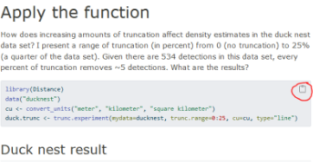
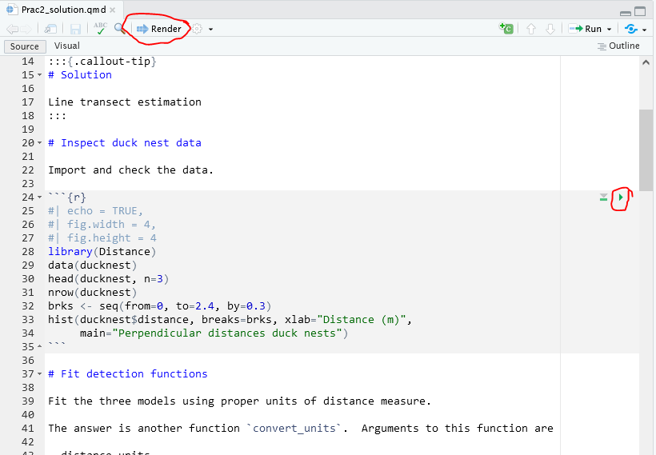

Learning materials
These exist in two places:
- this website you are currently viewing and
- the Posit/cloud space I created that you all share.
Distance sampling analysis is best learned by performing analyses. Take the opportunity to experiment and play. With Posit/cloud you are free to make mistakes, if things go completely wrong, simply delete your copy of a practical workspace and begin again.
Possible workflow
I envision your workflow to have the instructions for a practical open in one browser window or tab, and be working with Posit/cloud in another window or tab.

A Quarto file (file with .qmd extension) consists both of R code and “human” language describing the purpose of the code. These files are the “raw material” I used to produce the pages of this website.
In performing a practical, you can take either of two approaches, or a hybrid of both.
- build code in Posix/cloud from scratch, typing all code yourself
- use copy/paste of code from the instructions to move code from the instructions webpage into your Posit/cloud session
- you will note a small clipboard appear in the upper right corner of code blocks as you hover your mouse above; that lets you copy the content of the block to your clipboard
- as the workshop progresses, I expect you will make the transition from using the former to using the latter
- remember to experiment as well. Use the code I provide as a starting point; from which you can investigate alternative analyses.
Alternative workflow

You can also open a .qmd file in Posit/cloud. Pressing the Render arrow in the editor should recreate the document, for example a solution to a practical. To take a more studied approach to working with the code, use the green triangle at the top right of each chunk of R code to execute each bit of code individually.
Whatever way you interact with the code within these files, pay special attention to the output produced and experiment with additional analyses.